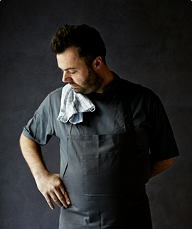
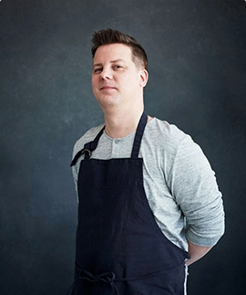

1995
Grand Opening
Granny was opened in May 6, 1990, the interior was created by the most famous artists. Today our restaurant welcomes 250 people!
2005
Second Branch
Since the very first day, Granny was a gathering place for teachers, doctors, actors. Therefore we decided to open our second branch!
2015
Great Taste Award
Granny was and still remains not just a restaurant, but also a remarkable part of the culture. We are happy to announce that we claim tate award.


Since our grand opening in May 1995, Granny has won great awards from food critics and organizations all over the world.
- The Good Food Award, Gold Seal (2017)
- The Organic Food Award, Soil Association (2017)
- The Great British & Egyptian Food Award (2016)
- The Food Made Good Award (2015)
- The Great Food Taste Award (2014)
- The Food Award, Egypt (2014)
- The Best Food Award, Egypt (2013)
- The Best Chef in Egypt & Best Restaurant (2012, 2013)
- The Best Emerging Egypt Cuisine (2012)
- The Best Dining Experience (2011)
- The Best Chef in Egypt (2010)
- The Egyptian Star (2009)

Todd Stephen
CEO & Founder

Walter Adler
Master Chef

James Carter
Thai Master Chef

Michael Luke
Chinese Master Chef

Don’t miss
Our News & Events
Follow our latest news updates to know about our offers, recipes and events. One cannot think well, love well, sleep well, if one has not dined well.

My favorite form of cold-weather exercise is snow-shoeing, but by chance I haven’t been able to go this year.

I began my career as a recipe tester for cookbooks, and I did that work for two years. I loved cookbooks and loved browsing for them at...

I’ve been baking this cake for many years, and have experimented with making it into cupcakes, as a layer cake, serving it dusted...

From green bean casserole to mashed potatoes and cranberry sauce, find standout Thanksgiving sides from Food Network chefs..

Cook sausage for 5 to 7 minutes until browned. Add onions and celery and saute until softened. Add salt and pepper, to taste..